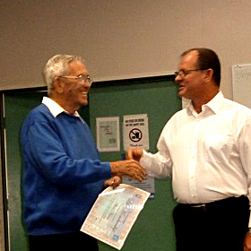

Alan Nixon
Life member since May 2015
Alan has been Secretary of North Queensland Ensembles Inc. /Barrier Reef Orchestra for eight years.
He is a former Commonwealth Government officer mainly in the Commonwealth Employment Service and prior to retirement he was the Department's Zone Manager for North Queensland. This expertise has served the Orchestra well as Alan has facilitated North Queensland Ensembles becoming incorporated and was also Secretary at the time when we employed our first Orchestra Manager. Alan has a background in community service having been a member of both Australian Jaycees and Rotary. He has also had long experience as an actor, producer and Committee member with several little theatre groups across the State.